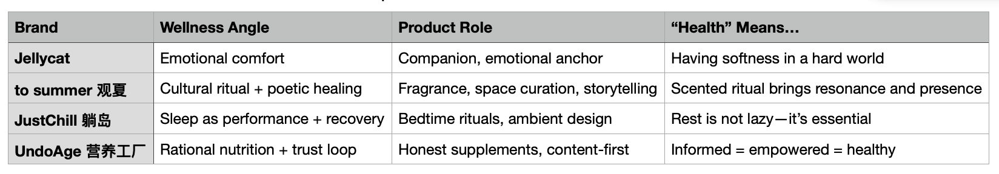
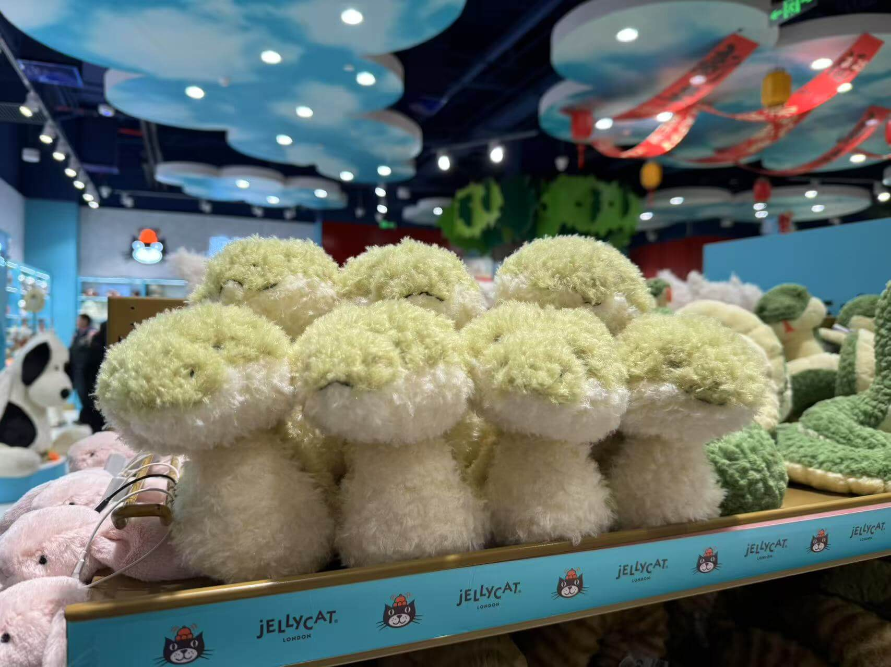
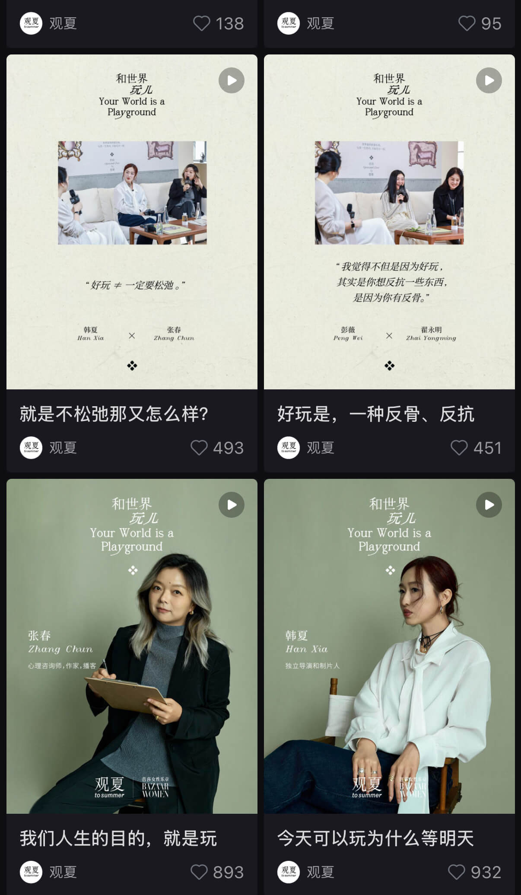
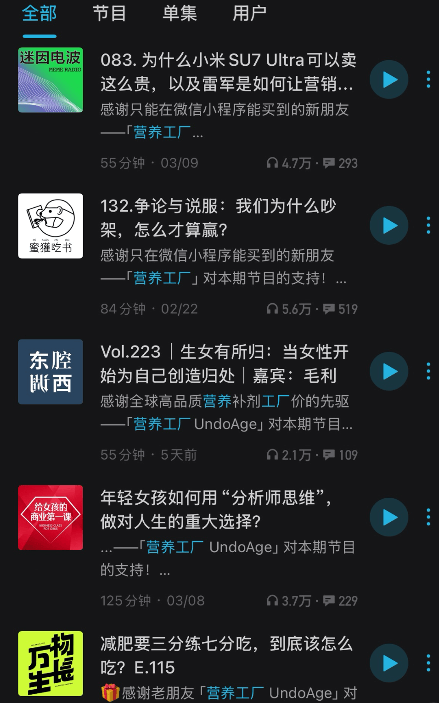

How Brands in China Are Redefining Wellness—One Emotion at a Time
What does it mean to be "healthy" in 2025?
Is it about six-pack abs and 10,000 steps a day?
Or is it lighting a lavender candle at 10:43PM and whispering "I'm fine, really"?

Welcome to China's new era of wellness.
It's ritualistic, emotional, and often a little weird—but it works. At least, it feels like it does.
As China's wellness industry balloons toward a projected ¥30 trillion (~$4.1 trillion USD) market by 2030, one thing is clear: brands aren't just responding to consumer health needs—they're shaping what health means.
Some do it through scent.
Some through plushies.
Some by helping you fall asleep.
And some? They just want you to trust them while they rebuild your mitochondria.
In this piece, I'll walk through 4 branding trends in China's wellness space—and how each brand defines health on their own terms, embedding their products as tools, rituals, and sometimes, emotional sidekicks.
1. 🧸 Jellycat: The Toy That Hugs You Back
You could call it a plush toy. But for many Chinese millennials, Jellycat is something else entirely: a licensed emotional support object.
Imported from the UK, Jellycat exploded in popularity not just for its cuteness—but for its sadness.

(cute toy snakes for the year of snake)
Many of their toys come with tiny tags that say things like:
"Please look after me."
It's simple, earnest, and kind of devastating.
In a fast-moving world where burnout is baseline, Jellycat offers something rare: permission to be soft.
So how does this become a wellness product?
• Jellycats aren't sold only in toy stores.
They're found in curated lifestyle boutiques, bookstores, even therapy centers.
• Social media users stage "daily check-ins" with their plushies: holding them while journaling, taking photos of them on vacation, or posting captions like "my therapist is busy so he sent his assistant."
• They've become visual metaphors for how we wish we were treated: gently, consistently, and without performance pressure.
Brand insight:
Jellycat doesn't say they're selling wellness. But in this emotional economy, a plush toy becomes a stand-in for self-kindness.
And that, arguably, is the first step toward healing.
2. 🌫️ to summer 观夏: When Healing Becomes a Cultural Ritual
If most wellness brands today offer peace through products, to summer (观夏) offers it through scent.
Born in Beijing and rooted in contemporary reinterpretations of Eastern aesthetics, to summer isn't just a fragrance brand—it's a slow-living movement disguised as scent.
While Western aroma brands often promise "calm" or "clarity," to summer leans into a different kind of wellness: symbolic, spatial, and poetic.
Their core message? "To live beautifully is to feel deeply."
So how do they define wellness?
• As spiritual texture.
Their incense, solid perfumes, and botanical scents aren't just olfactory—they're experiential. Each blend is inspired by Chinese gardens, literary motifs, or seasonal festivals. Scent becomes story. Fragrance becomes ritual.
• As curated space.
to summer doesn't chase algorithmic virality. They don't do e-commerce platforms. Instead, they build offline sanctuaries—carefully curated stores designed like art exhibitions, where you're invited to pause, not purchase.
Even their events—like roundtables with artists, performance projects, and literary salons—feel more like cultural programming than product launches.
• As writing.
Here's the twist: the brand's most powerful product might be… its words.
Their social media posts, campaigns, and scent descriptions read like mini essays—subtle, introspective, and evocative.
A candle might not just be "warm."
It might be "the comfort of old linen warmed by the sun in your grandmother's garden."
That's not copy. That's a mood. And people resonate with it—deeply.
Brand Insight:
In an era of quick-fix wellness, to summer offers slow resonance.
It's not about solving problems. It's about inviting presence.
Their users don't just buy a product. They enter a world—one scented with memory, ritual, and beauty.

(to summer branding on RedNote)
Brand insight:
Healing doesn't have to be dramatic. Sometimes, it's just having a corner of the world that smells like peace.
🛏️ 3. JustChill 躺岛：Sleep can be a different experience
There's something deeply comforting about a brand telling you:
"You don't need to optimize your life. Just lie down. Literally."
That's the philosophy behind JustChill 躺岛, a rising Chinese sleep brand that doesn't preach hustle or productivity. It leans into inactivity as healing.
But don't confuse it with laziness marketing. JustChill turns sleep into a curated experience: visual, emotional, and scent-driven.
So how does a sleep brand define wellness?
• Their flagship products—pillow sprays, relaxing bath cubes, pre-sleep audio—aren't positioned as "fixers," but as "mood-setters."
• Their copywriting is disarmingly honest. Example:
"This spray won't erase your anxiety. But it might buy you 17 minutes of peace. And that's enough."
• Their limited-edition drops include "Sunday Night Worry Kits," "Sleepover Calm Boxes," and bedtime affirmations written in soft pastels.
Brand insight:
Sleep is no longer a biological function. It's a lifestyle scene.
JustChill doesn't just help you fall asleep—it helps you feel okay about needing rest in the first place.
💊 4. UndoAge 营养工厂：When Trust Becomes the Best Supplement
When people say "the Xiaomi of health supplements," they're talking about UndoAge.
Born from a founder who "just wanted to fix the messed-up supplement industry," UndoAge isn't trying to be fancy—it's trying to be honest, efficient, and trustworthy in a space that's long been full of shady markups and broken promises.
"This industry is slow, overpriced, and full of BS. Someone needs to break it—and I want to be that guy."
— Zhu Xiaomu, UndoAge Founder (via Sina Finance)
So how do they define wellness?
• As clarity. Each product shows not just the ingredients, but also where they're from, who else is using the same ones, and why the price is what it is. Think: D3, NMN, Magnesium—but annotated like a Reddit AMA.
• As accessibility. Prices are shockingly low (a bottle of 95% fish oil sells for ¥59), because they cut out platforms like JD or Tmall and instead operate through WeChat mini-programs, promoting on podcasts, and private channels.
• As education. Instead of pushing sales, UndoAge invests in content partnerships with top Chinese podcasts that target stressed-out knowledge workers—arguably the most "health-aware" group in China. Think: Dongdong Xi Xi, Miye Eating Class, Meme Radio. Their ads don't just say "buy this," they say "here's why your brain fog is fixable."

(top podcasts promoting UndoAge)
• As dialogue. The platform invites users to chat directly with certified nutritionists through 1-on-1 consultations embedded into the shopping experience. Reviews aren't just star ratings—they're screenshots of sleep scores, daily logs, and health tracker data.
Brand Insight:
UndoAge isn't selling hope. It's selling control.
Not the kind you get from rigid routines, but from understanding what you're putting in your body, why it matters, and who's behind it.
So… What Are Brands Really Selling?
Not only about health.
They're selling definitions of wellness—stories we want to believe in.
And each brand answers the same question differently:
"What does it mean to feel okay?"
For some, it's hugging a bunny.
For others, it's learning about your B-vitamin ratio.
For most of us? It's something in between.
Three Questions for Branding:
1. What kind of "health" does the product emotionally represent?
2. Is the audience craving functionality—or a feeling?
3. Can the product live inside a daily ritual, or create one?
Because the future of wellness isn't just about "what works." It is a life style. And It's about what makes us feel like we're trying.
That effort, no matter how small, is sometimes the healthiest thing of all.